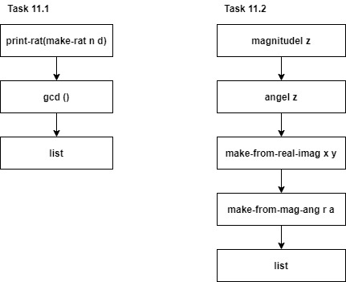
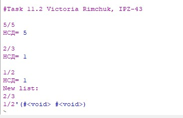
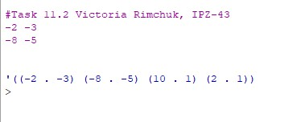
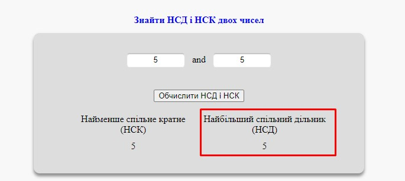
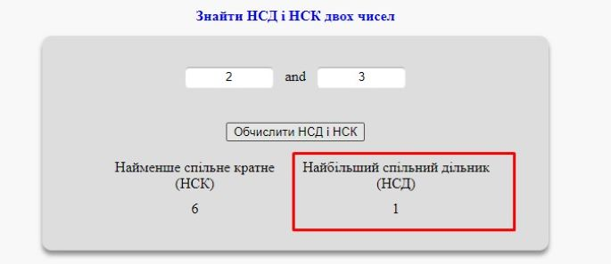
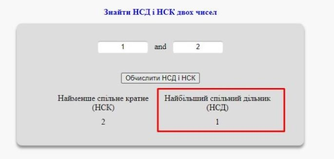
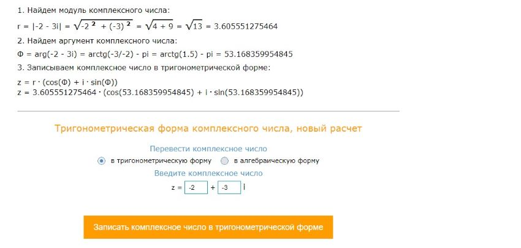
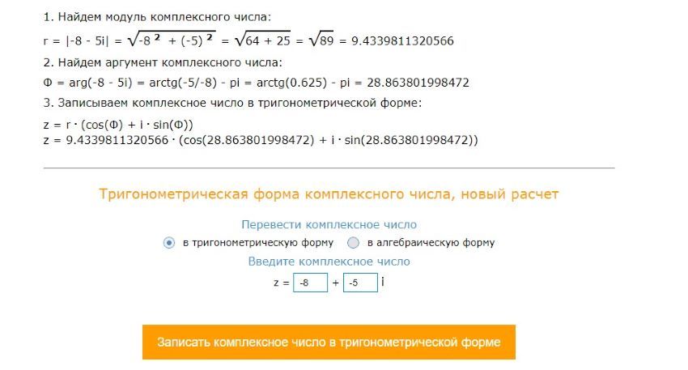
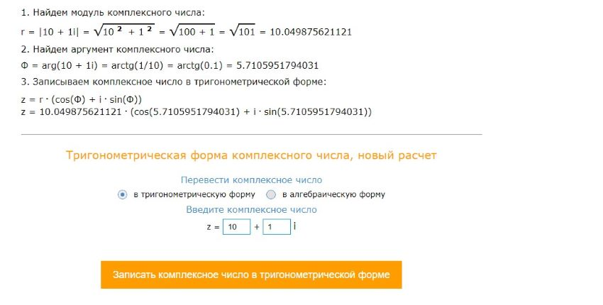
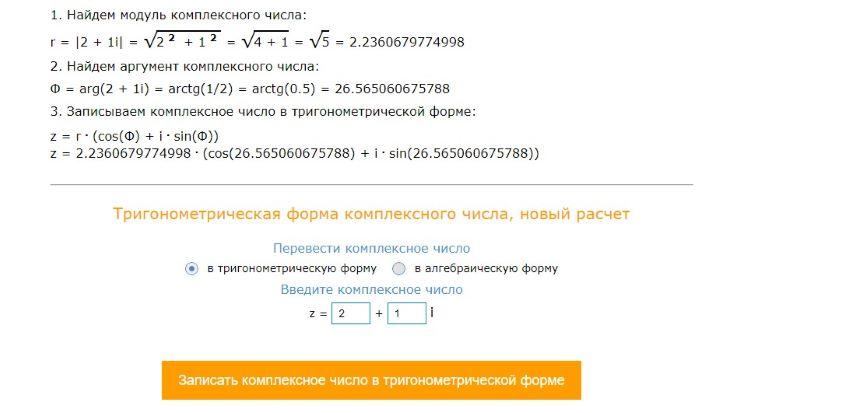

Лабораторна робота №5
Тема: Обробка раціональних та комплексних чисел мовами функціонального програмування
Завдання:
11.1.Створити список. елементами якого є різні раціональні числа у вигляді дробив. Обчислити кількість елементів в списку, які є нескоротними дробами та надрукувати їх. Для перевірки дробу на скоротність обчислити найбільший спільний дільник (НСД). Якщо НСД дорівнює одиниці, то дріб є нескоротний. Якщо НСД відмінний від одиниці, то дріб скоротний
11.2 Створити список комплексних чисел, заданих в тригонометричній формі . Переписати в новий список ті комплексні числа з першого списку, які в геометричні інтерпретації зображують точки в третьому квадранті декартової системи координат
Опис алгоритму для завдання 11.1:
1. Визначаємо чисельник
2. Визначаємо знаменник
3. Створюємо пару
4. Друкуємо пару
5. Задаємо вхідні дані у вигляді пар чисельника та знаменника
6. Перевіряємо НСД кожної пари
7. Виводимо на екран тільки ті дроби, які є нескоротними
Опис алгоритму для завдання 11.2:
1. Визначаємо дійсну частину, як початок числа
2. Визначаємо уявну частину, як кінець числа
3. Записуємо комплексне число у тригонометричній формі
4. Перевіряємо чи знаходиться задане число в геометричній
інтерпретації в третьому квадранті декартової системи координат
5. Задаємо вхідні числа списком
Структура програми (HIPPO діаграма):
Обгрунтування вибору середовища та мови
В якості середовища було обрано DrRacket версії 8.2 та мова Racket
Вибір середовища та мови був зумовлений наступним:
Код програми:
; #Task 11.1
(display "\n#Task 11.2 Victoria Rimchuk, IPZ-43")
(newline)
(define (numer x) (car x)) ;чисельник
(define (denom x) (cdr x)) ;знаменник
(define (make-rat n d) (cons n d)) ;створення пари
(define(print-rat x) ;друк пари
(newline)
(display (numer x))
(display "/")
(display (denom x)))
(print-rat (make-rat 5 5))
(newline)
(display "НСД= ")
(gcd 5 5)
(print-rat (make-rat 2 3))
(newline)
(display "НСД= ")
(gcd 2 3)
(print-rat (make-rat 1 2))
(newline)
(display "НСД= ")
(gcd 1 2)
(display "New list: ")
(list (print-rat (make-rat 2 3))(print-rat (make-rat 1 2))
; Task 11.2
(display "\n#Task 11.2 Victoria Rimchuk, IPZ-43")
(newline)
(define (Myreal-part z) (car z))
(define (Myimag-part z) (cdr z))
;============ тригонометрична форма компл числа==========
(define (square x)
(* x x))
(define (magnitude1 z)
(sqrt (+ (square (Myreal-part z)) (square (Myimag-part z)))))
(define (angle1 z)
(atan (Myimag-part z) (Myreal-part z)))
(define (make-from-real-imag x y)
(if (< x 0)(display x) 1)
(display " ")
(if (< y 0)(display y) 1)
(newline)
(cons x y))
(define (make-from-mag-ang r a)
(cons (* r (cos a)) (* r (sin a))))
(list (make-from-real-imag -2 -3) (make-from-real-imag -8 -5) (make-from-real-imag 10 1) (make-from-real-imag 2 1))
Скріншоти результатів:

Аналіз достовірності результатів:
11.1 Для перевірки достовірності отриманих результатів (НСД для кожної пари чисел) було використано онлайн калькулятор. Результати НСД, отримані за допомогою онлайн калькулятора представлені нижче:   
Проаналізувавши отримані результати можна зробити висновок, що результати, отримані за допомогою вбудованої функції та результати, отримані за допомогою онлайн калькулятора співпали.
11.2 Для перевірки запису комплексного числа в тригонометричній формі було використано онлайн калькулятор, результати перевірки за допомогою якого представлені нижче::



Проаналізувавши отримані результати можна зробити висновок, що, функції для розрахунків, описані в Racket відповідають тим, які були застосовані при обчисленні за допомогою онлайн калькулятора, .
Висновки:
В ході виконання даної лабораторної роботи було опановано технологію абстракції даних в мовах функціонального програмування. Реалізовано програму обробки раціональних та комплексних чисел мовами функціонального програмування, представивши ці числа конструкціями типу «пара